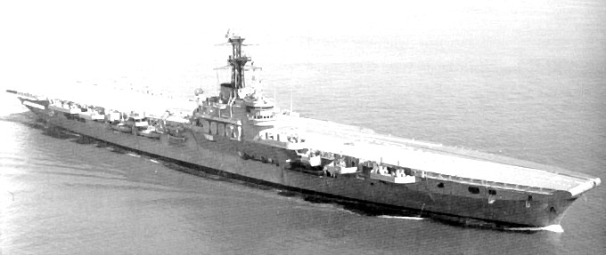
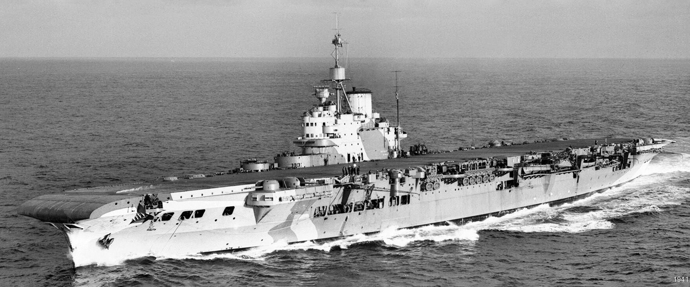
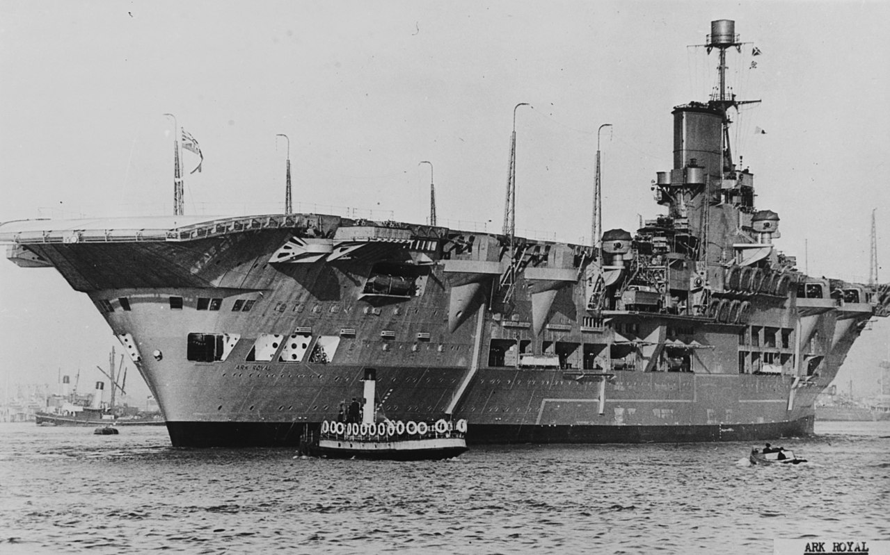
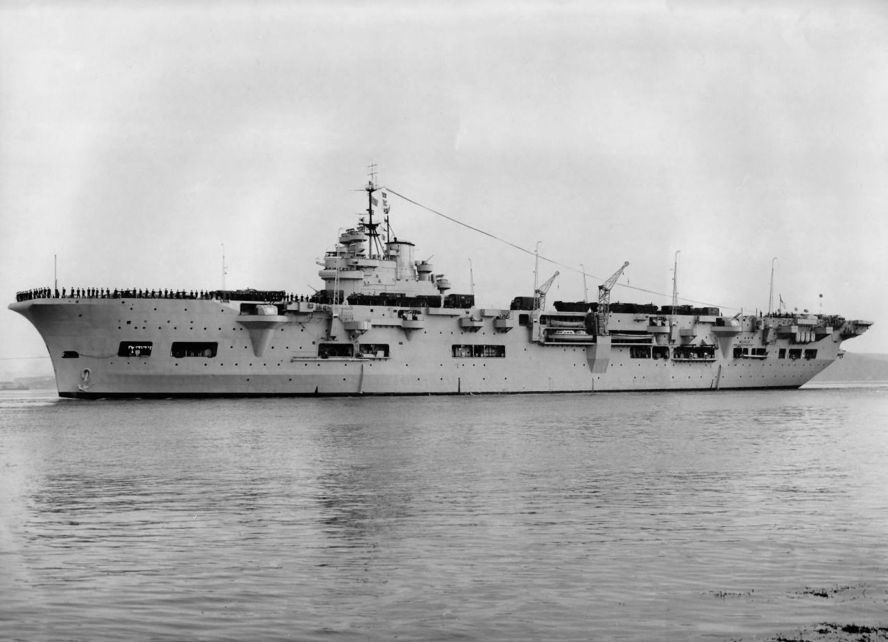

{kind=link}
{kind=link}
{kind=link}
{kind=link}

| Les Portes-Avions | |||
|---|---|---|---|
|  | Classe Colossus, HMS Warrior |
A servie dans la Royal Navy, Marine royale canadienne et pour finir dans la Marine argentine. Rebaptiser 2 fois -> NCSM Warrior -> ARA Independencia D'abord en service avec la Royal Navy en 1945, il est ensuite utilisé par la Marine royale canadienne entre 1946 et 1948. Il est à nouveau employé par la Royal Navy entre 1948 et 1958, avant d'être acquis par l'Argentine en 1959. Le navire est le quatrième de la classe Colossus, une classe de huit porte-avions légers construits durant la Seconde Guerre mondiale. Le navire est complété en 1944 et entre en service en 1945 sous le nom de HMS Warrior, avant d'être rapidement transféré à la Marine Royale Canadienne Après l’étude de la situation stratégique de l’Argentine par le Comando de Aviación Naval en 1942, et une fois analysés les probables théâtres d’opérations, la nécessité de posséder deux porte-avions se fait sentir. La situation économique et politique intérieure retarde cependant l’acquisition du HMS Warrior (R31) durant 13 ans jusqu’en 1958, date de la vente de divers bâtiments pour couvrir les frais. Après l’arrivée du Veinticinco de Mayo (V-2) racheté aux Pays-Bas le 15 octobre 1968 et mis en service le 22 août 1969 après un changement de chaudières, l’Independencia reste en service quelques mois puis est proposé à la Marina de Guerra del Perú, qui décline l'offre et est placé en réserve en 1970. On envisage de le convertir en navire de débarquement amphibie mais il est finalement démoli en 1971. |
Longueur : 211,8 m Maître-bau : 24,4 m Tirant d'eau : 7 m Déplacement : 18 300 t Propulsion : Turbines à vapeur Parosons à simple réduction, 4 chaudières Parsons Admiralty 3-drum type 350 psi (2.4 MPa), 2 hélices Puissance : 30 MW Vitesse : 25 nœuds |
|  | Classe Illustrious, HMS Illustrious |
Le HMS Illustrious est un porte-avions britannique actif pendant la Seconde Guerre mondiale. C'est le premier bâtiment de la classe Illustrious, qui en compte trois autres (Victorious, Formidable, Indomitable). l participe notamment à endommager très grièvement le Conte di Cavour lors de la bataille de Tarente face à la flotte italienne, dans la nuit du 11 au 12 novembre 1940. Le HMS Illustrious participe à l'attaque sur le port militaire italien de Tarente. Ses Fairey Swordfish réussissent à mettre hors d'usage le Conte di Cavour qui à l'armistice en 1943 ne sera toujours pas réparé. Durant cette bataille, trois autres navires sont endommagés, les cuirassés Vittorio Veneto et Caio Duilio ainsi qu'un croiseur dans le port intérieur. Le 10 janvier 1941, le porte-avions est touché par des bombardiers allemands avant de subir une nouvelle attaque à Malte où il est en réparation. Il est ensuite envoyé à Alexandrie puis à Norfolk où il reste jusqu'en 1942. Il participe ensuite à des opérations dans l'océan Indien avant de participer au débarquement de Salerne en 1943. Ensuite, après un bref retour au chantier naval, il participe à la guerre du Pacifique où il est touché trois fois par des attaques kamikazes japonaises, dont l'une le 6 avril 1945 lors de l'opération Kikusui I. Il est réformé en 1954 et mis à la ferraille deux ans plus tard. |
Longueur : 224 m Maître-bau : 29,2 m Tirant d'eau : 8,5 m Déplacement : 23 100 t Propulsion : 3 turbines à vapeur Puissance : 110 000 ch Vitesse : 30,5 nœuds |
|  | HMS Ark Royal |
Conçu en 1934 selon les restrictions du traité naval de Washington, l'Ark Royal est construit par Cammell Laird à Birkenhead, en Angleterre, lancé en 1937 et armé en novembre 1938. Le 13 novembre, à 15 h 40, l'opérateur sonar du destroyer HMS Legion détecte un son non identifié, mais suppose qu'il s'agit du bruit causé par les hélices d'un destroyer voisin. Une minute plus tard, l'Ark Royal est touché en plein milieu par une torpille, entre les réservoirs à essence et la soute à bombes, à la verticale de l'îlot. Un trou de 9 mètres par 40 est créé à tribord sous la ligne de flottaison, supposément par une torpille qui a touché la quille de roulis et explosé à l'intérieur du système de protection latéral. L'impact provoque une inondation des chaudières tribord, du commutateur téléphonique, des réservoirs de carburant et de plus de 30 mètres du puisard tribord. Les générateurs tribord sont détruits, et de ce fait la moitié arrière du navire se retrouve sans électricité et sans communications internes. La gîte atteint 20° entre 2 h 5 et 2 h 30 et lorsque l'ordre d'abandonner le navire est donné à 4 h 0, elle atteint 27°. À 4 h 30, le reste de l'équipage est entièrement évacué sur le Legion : ainsi, à l'exception de Mitchell, le naufrage ne fait aucune victime. Les 1 487 hommes sont transportés à Gibraltar sains et saufs. La gîte atteint ensuite 45° avant que l'Ark Royal ne chavire et ne coule à 6 h 19, le 14 novembrejam 39. Les témoins rapportent que le navire a basculé à 90°, restant dans cette position durant 3 minutes avant de se retourner. Il s'est ensuite brisé en deux, l'avant coulant en quelques minutes, suivi de la partie arrièreros 39. |
Longueur : 243,8 m Maître-bau : 28,9 m Tirant d'eau : 8,46 m Déplacement : 22 000 long tons (22 352 t) À pleine charge : 27 720 long tons (28 164 t) Propulsion : 3 hélices Turbines à engrenage Parsons 6 chaudières : Admiralty à 3 corps Puissance : 102 000 ch Vitesse : 31 nœuds (57 km/h) |
|  | HMS Unicorn |
Le HMS Unicorn est un navire de réparations, et un porte-avions léger construit pour la Royal Navy à la fin des années 1930. Il est achevé durant la Seconde Guerre mondiale et fournit un soutien aérien durant le débarquement amphibie à Salerne en Italie, en septembre 1943. À la fin de l'année, il est transféré à la Eastern Fleet dans l'Océan Indien. Il appuie alors les porte-avions de la flotte jusqu'à la formation de la British Pacific Fleet en novembre 1944. Il est transféré en Australie début 1945 pour participer à l'Opération Iceberg. Il sera retiré du service et renvoyé au Royaume-Uni en janvier 1946 et démoli le 15 juin 1959 ! |
Longueur : 195,10 m Maître-bau : 27,50 m Tirant d'eau : 7 m Puissance : 40 000 ch Vitesse : 24 nœuds (44 km/h) |
Retrouver la page complète sur Github UwU
Vous pouvez me contacter sur Discord via mon # = Alice(SaabniaTv)#0001 ou via mon serveur discord